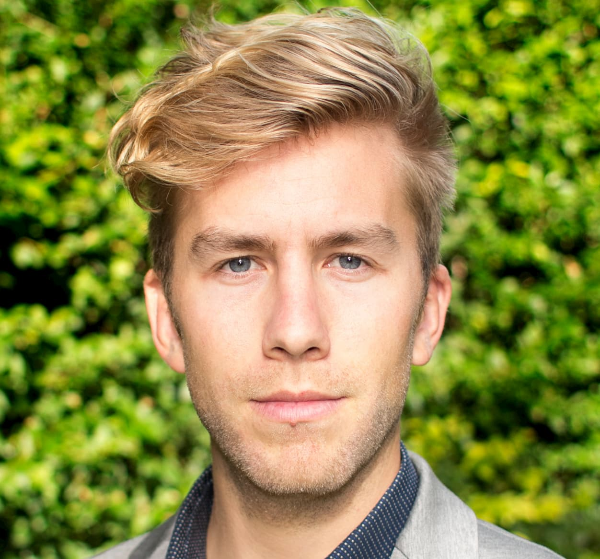

# Mattias Bonte :belgium:
>*"We can't understand what we can't feel"*

## Me, in one sentence
Strong minded :brain: human who is trying to live life from the heart :heartpulse:
Birthday :partying_face: | Favorite Color :art: | Favorite Food :fork_and_knife: | Pinapple :pizza:
-- | -- | -- | --
15/03 | Blue | Mango |
## Hobbies
- Boarding
- Kitesurf :surfing_man:
- Onewheel :skateboard:
- Snowboard :snowboarder:
- Sport
- Run :running_man:
- Cycle :biking_man:
- Swim :swimming_man:
- Gaming :joystick:
* Presence
* Wandering Nature :compass:
* Pondering life :thought_balloon:
## You can always count on me when..
- Feeling overwhelmed, emotional trouble :blush:
- Summary of a certain lesson is needed :notebook:
- Having technical issues :nerd_face:
## Funny story
I once jumped with my face against a basketball ring :basketball: while in a trampoline park with a lot of small kids. I just hope their nightmares have faded by now. My whole face was bleeding and I had to get stitches. Also my humour can be strange? :thinking:
### TL;DR
Don't go to a trampoline park with me. :grin:
<< [:arrow_left: Major](https://github.com/MajorGirmay/Markdown-challenge/blob/master/README.md) || Mattias || [Mausam :arrow_right:](https://github.com/ErAsuratya/markdown-challenge/blob/master/README.md) >>